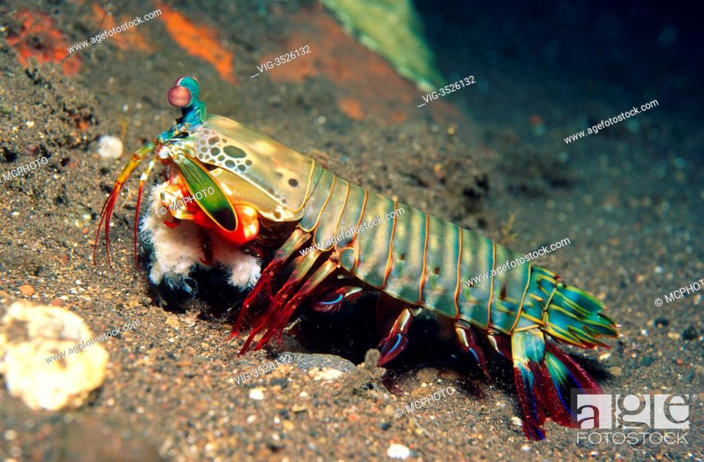

Fatos sobre o Stomatopoda
Onde Vivem
Stomatopoda, cujo nome cientifico é Odontodactylus scyllarus vive em fundo consolidado, lodoso ou ainda arenoso,
Dados a respeito de sua classificação cientifica
- Reino :Animalia
- Filo:Arthropoda
- SubFilo:Crustacea
- Classe :Malacostraca
- SubClasse:Hoplocarida
- Ordem : Stomatopoda Latreille, 1817
Do que se alimentam
Stomatopodas caçam camarões, caranguejos, moluscos, peixes e até mesmo outros da mesma ordem. Usando um sentido de visão muito apurado e capaz de interpretar polarização no espectro ultravioleta e infravermelho, veja de perto esse pequeno gigante neste video
